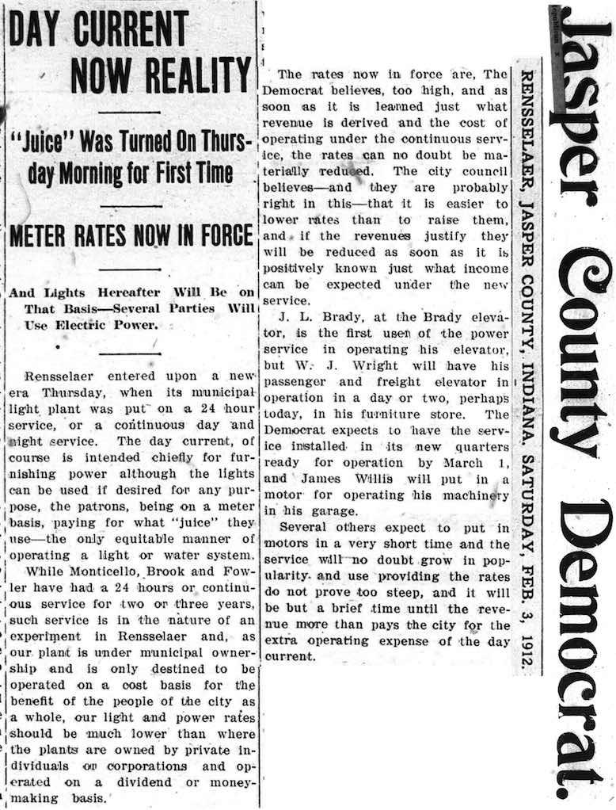
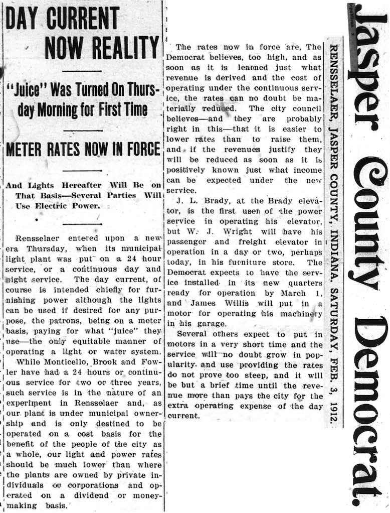

Monday's City Council meeting was very short, lasting only twenty minutes. The two senior members were absent, on vacation to Florida. After a transfer of funds to pay for engineering costs of Community Crossing and other grants items, City Project Coordinator Jerry Lockridge reported that the City had submitted a grant proposal to the Next Level Trails program. (See here.) The proposal would be for a trail that would connect Brookside Park with the Fairgrounds and the requested amount was $700,000 to $800,000. The grant is an 80-20 match with the State providing the 80%. Rick Odle suggested that there might be some blowback if the proposal is funded because there are many sidewalks in Rensselaer that are in bad shape. On the other hand, a sidewalk to the Fairgrounds is something that people have suggested in the past and it would fill a need. As someone who has biked, jogged, and walked a great deal, I have found sidewalks on lightly traveled streets have little use because it is easier to walk in the street. They are important along heavily-trafficked roads and this is why I was so happy that the south part of Grace Street got a decent sidewalk last year.
The Council voted to proceed with the grant. The City should learn in a month or two whether the grant proposal is accepted.
The Council voted to approve Kevin Armold as its appointment to the Rensselaer Central School Board. There were three applicants for the slot and this appointment fills the remainder of the term to which Jacob Ahler was appointed. (He resigned when he became attorney for the County Council, which usually meets at the same time the School Board meets.)
The strong winds that we had over the weekend caused three power outages. The wind also forced open the Police Department door, causing minor damage.
The Gas Department has received a grant of $2600 to cover the cost of the Pipeline Awareness Open House that is scheduled for May 3. The money comes from fines imposed on those who hit gas pipelines when digging. Well # 8 (on Sparling) has been in operation since February 15. The City now has three water wells supplying City water.
The other meeting on Monday night was the Jasper County Plan Commission meeting at 7:00 pm. I was very surprised to see a packed room when I arrived because the only item on the agenda was a proposed ordinance for solar energy systems that had been discussed at the previous meetings of the Plan Commission and tabled for changes. It had not appeared to be controversial at the previous meeting. I suspect that most of the audience was there expecting something related to wind turbines.
The proposed ordinance was put together by a group of people, some of whom were not members of the Plan Commission. They had started with an ordinance from Shelby County and then made changes suggested by other ordinances that they found. Very few counties currently have a solar farm ordinance. The floor was open to public discussion and there were only two comments, neither of much significance. The discussion by committee members had periods of long silence as they looked over the ordinance. There were questions about setbacks. From what I could discern, there is a 200 foot setback to a residence and a 50 foot setback to a property line. There was one change made to the draft and it struck me as procedurally strange. It was a motion to amend, but there was no motion on the floor to amend. Finally a motion was made and passed to send the ordinance to the Commissioners with a favorable recommendation. It should be on the March Commissioners agenda.
The floor was then open to public comments. One person suggested that a committee be formed to review wind turbine setbacks and Mary Scheurich said that such a committee had already been formed but it had not yet met. Another person complained that the setbacks in the wind turbine ordinance would prevent him from selling his land for residences. He was told several times that the setbacks were not reciprocal (that is, the setbacks applied to the wind turbine developers did not apply to people building houses) but he did not seem to understand what that meant.
I found a map showing electrical generating stations of the U.S. on the internet. (See here.) It is not quite up-to-date because it does not have the second Rensselaer solar plant. If you zoom in, you can see the location of every large wind turbine in the U.S. as well as the solar farms, the nuclear plants, the hydro plants, and even facilities generating energy from biomass.
I saw an early sign of Spring in the Walmart parking lot.
I noticed a large flock of Canadian geese in the Babcock Quarry. There were three white geese with the flock. Anyone know what they were? Snow geese? Domesticated geese?
With all the discussion of setbacks to protect people from injury, annoyance, and inconvenience, I have been wondered what the appropriate setbacks would be for some of the common things that are dangerous or annoying. Based on the number of people injured or killed in automobiles, roads should have setbacks. I think 500 feet from any residence would be sufficient for highways. Maybe city streets could get by with 200 feet, though when people ride past on deafening motorcycles or in cars with music so loud that it rattles windows, 500 feet would be better. Railroads carry hazardous materials and they can derail, as we experienced in Rensselaer late in 2017. They are also extremely loud. A setback of at least 1000 feet seems reasonable. Trees can cause conflict among neighbors when the leaves on one person's tree fall on the yard of another. A setback of at least 50 for a tree would reduce this problem (and we could eliminate it by banning trees). The setback could be adjusted to the species of the tree. I have heard farmers complaining about neighbors who do not apply herbicides carefully and as a result injure or kill the crops of neighbors. A simple solution would be to have setbacks: prohibit farmers from planting within 100 feet of the property line. If there needs to be setbacks for solar panels when they are in solar solar farms, why shouldn't the same setbacks apply to anyone who wants to install solar panels on a roof? I think I have just scratched the surface of where setbacks could be applied.

This blog reports events and interesting tidbits from Rensselaer, Indiana and the surrounding area.
Wednesday, February 27, 2019
Wednesday, February 20, 2019
Another long meeting
The Jasper County Historical Society met on Tuesday evening at 6:30. They had a brief discussion about INDOT plans to resurface SR 114. INDOT may encroach on Museum property as it alters sidewalk cuts but the good news is that it will pay the Society for the encroachment. Trinity United Methodist Church has also been notified by INDOT for the same project.
The Society is searching for a treasurer. It plans to remodel its bathroom. This year's Cemetery Walk is scheduled for September 21. There was mention of the controversy in Pulaski County concerning the fate of their Court House. It has not been maintained and the discussion is now whether to spend the money needed to correct the problems or to demolish it. The next Society meeting will be March 19 and the program will be Birding in Indiana.
I left before the meeting concluded to go to the Jasper County Council meeting that started at 7:00. The first item on the agenda was a request by Orion Renewable Energy Group to have a large portion ofKeener Kankakee Township declared an economic revitalization area (ERA). If I understand the tax-abatement process correctly, such a declaration is the first step needed to pass a tax abatement, and Orion wants a tax abatement for a very large solar park that it would like to build. Below is a picture of the area involved. The Kankakee River is at the top and SR 49 is on the left.
The Orion spokesman explained that NIPSCO is currently currently focused on lining up wind energy because the tax credits for wind energy production will soon be ending. (I tried to find more and the best I could find was here. Both wind and solar get significant tax credits and if the credits are bigger than the tax owed, the tax credits can be sold to other businesses.) When NIPSCO turns its attention to contracting for solar energy, it will start with projects that are shovel-ready, that is, have all the permits and regulatory approval in hand.
The proposed project would be for a solar farm with a capacity of 265 megawatts. That amount is the spare capacity of the transmission lines at the location. (Rensselaer's new solar park has a capacity of 4 to 5 megawatts.) The cost of the facility, if completely built out, would be about $300 million dollars. Each megawatt of capacity requires about eight acres of land so the proposed facility would occupy about 2000-2200 acres, about 30-35% of the area outlined in the map above. They have contracted for some of the land they want but there are still some contracts that have not been signed. Twenty to thirty landowners will be involved. The panels will have single-axis rotation like those in the new Rensselaer solar farm. Orion may add some battery capacity. Currently the efficiency of batteries is increasing faster than the efficiency of solar panels which is increasing faster than the efficiency of wind turbines. Construction will not start until the project has a signed contract for power purchase. Once construction starts, the project should be ready to generate power in about six months.
Orion had contracted with Umbaugh to develop scenarios for the tax abatement. Most tax-abatement plans run for ten years and are sliding-scale. In the first year the abatement is 100%, so the company pays no property tax. Each year it drops by 10%, so in year two the tax paid is 10% of what it would be without the abatement, in year three it is 20%, etc. As time goes on, the company depreciates the investment so that the assessed valuation will also fall. However, utility property has special rules and the value of the property for tax purposes cannot fall below 30% of its initial value. The Council members were given the numbers showing how a conventional abatement would benefit the company and how much it would pay in taxes for each year (I think for a fifty year project life, but I may be wrong on that). One of the items common in abatements for renewable energy projects is a payment by the company to the county for economic development, which reduces the benefit to the company and gives the county additional revenue. In an alternative scenario the tax abatement would be 100% for ten years but the company would pay a much greater amount back as an economic development fee. The Council members were urged to study the numbers over the next month.
Andree moved and Jordan seconded a motion to establish the ERA. The motion passed with DeVries casting the negative vote. Next month passing a tax abatement will probably be on the agenda.
(On the agenda for this month's Plan Commission is a solar farm ordinance. Orion's plans may spur quick action.)
Next up was Stephen Eastridge from Jasper County Economic Development Organization. He noted that the second meeting of the NIPSCO task force will be Monday at 7:00 pm at the Fase Center. County Assessor Dawn Hoffman will discuss the property tax implications of the closure of the Schahfer plant.
He then turned his attention to tax abatement policy and suggested that the Council could designate ERAs for areas where it wanted investment and thus negate the need for the sort of resolution that they had just passed. No immediate action was taken on the suggestion. Mr Eastridge announced that the Jasper and Newton County economic development offices had cooperated on a proposal to have one of the state development meetings held at Fair Oaks Farms and it had been accepted. Someone noted that sometime later this year Fair Oaks will host a manure convention that will attract about 2000 attendees.
The remainder of the meeting was occupied with items lacking public interest. The Coroner continued discussion of per diem pay. There were additional appropriates for Animal Control, Community Corrections, and the Sheriff and a transfer for the Highway Department. The meeting adjourned two hours and twenty minutes after it began.
The Rensselaer Republican is reporting that the KV School Corporation will be leasing land to construct a small solar facility.
The Society is searching for a treasurer. It plans to remodel its bathroom. This year's Cemetery Walk is scheduled for September 21. There was mention of the controversy in Pulaski County concerning the fate of their Court House. It has not been maintained and the discussion is now whether to spend the money needed to correct the problems or to demolish it. The next Society meeting will be March 19 and the program will be Birding in Indiana.
I left before the meeting concluded to go to the Jasper County Council meeting that started at 7:00. The first item on the agenda was a request by Orion Renewable Energy Group to have a large portion of
The Orion spokesman explained that NIPSCO is currently currently focused on lining up wind energy because the tax credits for wind energy production will soon be ending. (I tried to find more and the best I could find was here. Both wind and solar get significant tax credits and if the credits are bigger than the tax owed, the tax credits can be sold to other businesses.) When NIPSCO turns its attention to contracting for solar energy, it will start with projects that are shovel-ready, that is, have all the permits and regulatory approval in hand.
The proposed project would be for a solar farm with a capacity of 265 megawatts. That amount is the spare capacity of the transmission lines at the location. (Rensselaer's new solar park has a capacity of 4 to 5 megawatts.) The cost of the facility, if completely built out, would be about $300 million dollars. Each megawatt of capacity requires about eight acres of land so the proposed facility would occupy about 2000-2200 acres, about 30-35% of the area outlined in the map above. They have contracted for some of the land they want but there are still some contracts that have not been signed. Twenty to thirty landowners will be involved. The panels will have single-axis rotation like those in the new Rensselaer solar farm. Orion may add some battery capacity. Currently the efficiency of batteries is increasing faster than the efficiency of solar panels which is increasing faster than the efficiency of wind turbines. Construction will not start until the project has a signed contract for power purchase. Once construction starts, the project should be ready to generate power in about six months.
Orion had contracted with Umbaugh to develop scenarios for the tax abatement. Most tax-abatement plans run for ten years and are sliding-scale. In the first year the abatement is 100%, so the company pays no property tax. Each year it drops by 10%, so in year two the tax paid is 10% of what it would be without the abatement, in year three it is 20%, etc. As time goes on, the company depreciates the investment so that the assessed valuation will also fall. However, utility property has special rules and the value of the property for tax purposes cannot fall below 30% of its initial value. The Council members were given the numbers showing how a conventional abatement would benefit the company and how much it would pay in taxes for each year (I think for a fifty year project life, but I may be wrong on that). One of the items common in abatements for renewable energy projects is a payment by the company to the county for economic development, which reduces the benefit to the company and gives the county additional revenue. In an alternative scenario the tax abatement would be 100% for ten years but the company would pay a much greater amount back as an economic development fee. The Council members were urged to study the numbers over the next month.
Andree moved and Jordan seconded a motion to establish the ERA. The motion passed with DeVries casting the negative vote. Next month passing a tax abatement will probably be on the agenda.
(On the agenda for this month's Plan Commission is a solar farm ordinance. Orion's plans may spur quick action.)
Next up was Stephen Eastridge from Jasper County Economic Development Organization. He noted that the second meeting of the NIPSCO task force will be Monday at 7:00 pm at the Fase Center. County Assessor Dawn Hoffman will discuss the property tax implications of the closure of the Schahfer plant.
He then turned his attention to tax abatement policy and suggested that the Council could designate ERAs for areas where it wanted investment and thus negate the need for the sort of resolution that they had just passed. No immediate action was taken on the suggestion. Mr Eastridge announced that the Jasper and Newton County economic development offices had cooperated on a proposal to have one of the state development meetings held at Fair Oaks Farms and it had been accepted. Someone noted that sometime later this year Fair Oaks will host a manure convention that will attract about 2000 attendees.
The remainder of the meeting was occupied with items lacking public interest. The Coroner continued discussion of per diem pay. There were additional appropriates for Animal Control, Community Corrections, and the Sheriff and a transfer for the Highway Department. The meeting adjourned two hours and twenty minutes after it began.
The Rensselaer Republican is reporting that the KV School Corporation will be leasing land to construct a small solar facility.
Monday, February 18, 2019
Tidbits 02-18-2019
The new exhibit at the Jasper County Historical Society is called "Uncommon Jasper County." It highlights unusual things about the County and its history. For example, the Helen Reynolds Skaters were a local group that toured nationally.
Helen Reynolds King died in 2001.
The Chicago Bears provide another bit of interesting Jasper County history. The team trained at Saint Joseph's College from 1944 through 1974.
There is almost no physical evidence left of Gifford's railroad, which started in McCoysburg and ended in Dinwiddie in Lake County.
The exhibit is still being developed. The Museum is open on the first and third Saturday's of each month from 10:00 am to 1:00 pm. It is also open for the monthly Historical Society meeting. The next one is Tuesday evening at 6:30 pm.
Every few years there is ice ideal for ice skating east of Weston Cemetery. This year we had a high river level that contributed to flooding the field and then cold weather that froze the water. At least one person tried skating on it and left skate marks on the ice. (The two people below did not have skates.)
Sunday's snow may end the skating season. Or may not.
Below is a newspaper article that reminds us of how much technology has changed life in the past century.
Helen Reynolds King died in 2001.
The Chicago Bears provide another bit of interesting Jasper County history. The team trained at Saint Joseph's College from 1944 through 1974.
There is almost no physical evidence left of Gifford's railroad, which started in McCoysburg and ended in Dinwiddie in Lake County.
The exhibit is still being developed. The Museum is open on the first and third Saturday's of each month from 10:00 am to 1:00 pm. It is also open for the monthly Historical Society meeting. The next one is Tuesday evening at 6:30 pm.
Every few years there is ice ideal for ice skating east of Weston Cemetery. This year we had a high river level that contributed to flooding the field and then cold weather that froze the water. At least one person tried skating on it and left skate marks on the ice. (The two people below did not have skates.)
Sunday's snow may end the skating season. Or may not.
Below is a newspaper article that reminds us of how much technology has changed life in the past century.
Thursday, February 14, 2019
Something old, something new, something borrowed, something blue
But not in that order. First the borrowed. The picture below was sent to me by Chris Kosary on Tuesday.
He explains:
Something new is a sign for Valley Oaks, which until recently was Wabash Valley Alliance. It is located kitty-corner from Royal Oaks--hopefully no one will confuse the two Oaks. The picture was also taken on Tuesday.
I saw the sign as I was checking progress on the Autumn Trace apartments. The Autumn Trace Facebook page has some recent pictures that show that except for a section on the north, the roof is complete. The commentary says that workers are starting to install drywall.
Somethings blue come from the Annual Regional Upper Elementary Art Show that is currently in the Fendig Gallery. It features art by third through fifth graders from several area schools.
Finally for something old. Here is an newspaper article from 1912 announcing that the electric utility would begin 24-hour service. I had never realized that early on power was only provided in the evening or at night, but it makes sense. The first use for electricity was for lighting and finding other uses for it did not make sense if it was only available for half the day. Now we have so many things that rely on electricity that we are paralyzed when the power goes out.

He explains:
I caught this a couple of minutes ago and snapped a couple of pictures.
This is the railroad crossing at McKinley with Rensselaer Iron in the background.
What has happened is that one of the joiner bars that link the rail together snapped in the cold spell last week and it is being replaced. The gentleman in the picture told me that instead of sending out a crew with a multi-ton machine that could stretch the rail back into position, he was just doing it "old school" by laying out a product called a "Flame Snake" (like a rope soaked in a flammable oil-Yellow and red can in one of the images). He then lighted it to warm the rail up so it would expand and the holes of the new joiner would match up again.
It made a lot of smoke but looked pretty cool. There is still room for doing things the tried and true way sometimes.
Something new is a sign for Valley Oaks, which until recently was Wabash Valley Alliance. It is located kitty-corner from Royal Oaks--hopefully no one will confuse the two Oaks. The picture was also taken on Tuesday.
I saw the sign as I was checking progress on the Autumn Trace apartments. The Autumn Trace Facebook page has some recent pictures that show that except for a section on the north, the roof is complete. The commentary says that workers are starting to install drywall.
Somethings blue come from the Annual Regional Upper Elementary Art Show that is currently in the Fendig Gallery. It features art by third through fifth graders from several area schools.
Finally for something old. Here is an newspaper article from 1912 announcing that the electric utility would begin 24-hour service. I had never realized that early on power was only provided in the evening or at night, but it makes sense. The first use for electricity was for lighting and finding other uses for it did not make sense if it was only available for half the day. Now we have so many things that rely on electricity that we are paralyzed when the power goes out.

Tuesday, February 12, 2019
Council meeting, population, and an bygone controversy
Monday's City Council meeting had a short agenda. After the routine opening items, the Council approved the gas tracker resolution, which was an eight cent decrease per hundred cubic feet. (January had seen a fifteen cent increase.)
Each year the City passes an ordinance to return outstanding warrants to original funds. The ordinance assumes that City checks that have not been cashed for two years will never be cashed, and the books are adjusted accordingly. If someone who was supposed to be paid and lost the check asks for payment, they will still be paid. The Council, as it does each year, passed the ordinance. It then passed an ordinance establishing a donation fund. If someone or a group wants to make a donation for a specific purpose (flags for downtown was the one mentioned), this fund will be a place to park the funds. People can earmark donations for specific purposes and the money will only be spent for that purpose.
The Little Cousin Festival Committee requested a donation of $500 for a scholarship it is offering. Why the LCJ Committee is giving a scholarship and why the City should contribute were never really explained, but the Council granted the request.
In a recent Council meeting the discussion of recording equipment led to the establishment of a committee to investigate options. On Monday the committee reported that it had gotten a second quote. The quote from the company that had made the presentation a few meetings back was $17,000 and the new quote was not to exceed $12,000. It would include microphones for each Council member that record on a separate track so that each mic can be isolated on playback. It would also include two large monitors that would allow the audience to see presentations. The Committee was asked to get a written quote for the next meeting.
The Clerk-Treasurer asked the Council to consider moving her office into some of the space vacated by the Police Department. A committee (Barton and Cover) was established to consider the proposal.
City offices will closed on President's Day. A new power line along SR 114 has been completed that connects the City with the Watt substation. Well #8 (on Sparling) has its new pump and this week should be tested. If all goes well, it may be on line by the end of the week. With that, the meeting ended.
A few days ago a Pulaski County Facebook page linked to a page of population estimates for Indiana Counties. (See here.) Pulaski County had one of the largest percentage drops in the state, a decline of 6% from 2010 to 2017. I wonder if their tax structure contributed to that. Pulaski has the highest county income tax in the state. They decided to transfer taxes from property, which is hard and in the case of land impossible to move, to people with income. Jasper County has had almost no change in population according to these estimates, though any effect from the closing of St. Joseph's College would probably not show up because the data only goes to 2017. Most rural counties show population declines and most urban counties have population increases.
The cold weather and the falling river level have created some strange ice formations on trees along the river.
Finally, I was recently scanning through newspapers from 1903. The contentious issue of the day was liquor, with the temperance movement seeking to shut down the bars. I thought this article was humous enough to save.
Each year the City passes an ordinance to return outstanding warrants to original funds. The ordinance assumes that City checks that have not been cashed for two years will never be cashed, and the books are adjusted accordingly. If someone who was supposed to be paid and lost the check asks for payment, they will still be paid. The Council, as it does each year, passed the ordinance. It then passed an ordinance establishing a donation fund. If someone or a group wants to make a donation for a specific purpose (flags for downtown was the one mentioned), this fund will be a place to park the funds. People can earmark donations for specific purposes and the money will only be spent for that purpose.
The Little Cousin Festival Committee requested a donation of $500 for a scholarship it is offering. Why the LCJ Committee is giving a scholarship and why the City should contribute were never really explained, but the Council granted the request.
In a recent Council meeting the discussion of recording equipment led to the establishment of a committee to investigate options. On Monday the committee reported that it had gotten a second quote. The quote from the company that had made the presentation a few meetings back was $17,000 and the new quote was not to exceed $12,000. It would include microphones for each Council member that record on a separate track so that each mic can be isolated on playback. It would also include two large monitors that would allow the audience to see presentations. The Committee was asked to get a written quote for the next meeting.
The Clerk-Treasurer asked the Council to consider moving her office into some of the space vacated by the Police Department. A committee (Barton and Cover) was established to consider the proposal.
City offices will closed on President's Day. A new power line along SR 114 has been completed that connects the City with the Watt substation. Well #8 (on Sparling) has its new pump and this week should be tested. If all goes well, it may be on line by the end of the week. With that, the meeting ended.
A few days ago a Pulaski County Facebook page linked to a page of population estimates for Indiana Counties. (See here.) Pulaski County had one of the largest percentage drops in the state, a decline of 6% from 2010 to 2017. I wonder if their tax structure contributed to that. Pulaski has the highest county income tax in the state. They decided to transfer taxes from property, which is hard and in the case of land impossible to move, to people with income. Jasper County has had almost no change in population according to these estimates, though any effect from the closing of St. Joseph's College would probably not show up because the data only goes to 2017. Most rural counties show population declines and most urban counties have population increases.
The cold weather and the falling river level have created some strange ice formations on trees along the river.
Finally, I was recently scanning through newspapers from 1903. The contentious issue of the day was liquor, with the temperance movement seeking to shut down the bars. I thought this article was humous enough to save.
Thursday, February 7, 2019
Odds and ends, 2-7-2019
The weather keeps changing. The snow melt and rains have raised the river level but it is still below the flood stage. Lake Weston is back. Below is a picture of the fallen tree by Weston Cemetery that will act as a dam if the level rises higher. The picture was taken on Wednesday.
The forecast is for much colder temperatures in the week ahead.
The Rensselaer Park Board met Monday night for a long session even though both the Rensselaer Park Board and the Park Corporation lacked quorums. There was a long and hopefully fruitful conversation about future cooperation with a representative from the Rensselaer Regional Soccer Club. It seems unlikely that the grass on the Monnett fields will be well enough established to have games there next year so plans are being made to plot some fields at Brookside Park for the upcoming year.
The other guests at the meeting want to start a softball team of 6th, 7th, and 8th graders girls this spring. The Rensselaer Schools do not want to sponsor it, perhaps because they do not have the facilities. Undeterred, the parents will do it on their own. They wanted practice space in the parks and were thinking Columbian Field. Because that field will be used by the park leagues for practice in April and May, they were told that Brookside will be a better spot and they were assured that they will have a field for both practice and some home games. The Board should have taken a phone vote by now to make the arrangement official.
What was once the campus of Christian Haven near Wheatfield will be sold at auction this month. Details here.
The historical preservation people have concluded that the long-vacant house on the corner of Washington and McKinley known as the Forsythe-McMahon House is beyond repair. It has been on the list of endangered historical structures for many years.
WLFI reports that Tippecanoe County will ban industrial wind turbines. See here.
Looking for some information on old microfilm, I bumped into two other items that I thought interesting. One was this notice from 1915:

One of the names that is prominent in the early history of Jasper County is Makeever. As far as I know, no one in the area still has that name and I have always wondered what happened to the family. I found an obituary in an August, 1928 Rensselaer Republican that may explain. Sanford Makeever who grew up in Rensselaer and attended Rensselaer high school had died in East Orange, New Jersey. He had studied law at Valparaiso University and gone to Chicago and then on to New York. Below is the paragraph that lists his surviving siblings.

The forecast is for much colder temperatures in the week ahead.
The Rensselaer Park Board met Monday night for a long session even though both the Rensselaer Park Board and the Park Corporation lacked quorums. There was a long and hopefully fruitful conversation about future cooperation with a representative from the Rensselaer Regional Soccer Club. It seems unlikely that the grass on the Monnett fields will be well enough established to have games there next year so plans are being made to plot some fields at Brookside Park for the upcoming year.
The other guests at the meeting want to start a softball team of 6th, 7th, and 8th graders girls this spring. The Rensselaer Schools do not want to sponsor it, perhaps because they do not have the facilities. Undeterred, the parents will do it on their own. They wanted practice space in the parks and were thinking Columbian Field. Because that field will be used by the park leagues for practice in April and May, they were told that Brookside will be a better spot and they were assured that they will have a field for both practice and some home games. The Board should have taken a phone vote by now to make the arrangement official.
What was once the campus of Christian Haven near Wheatfield will be sold at auction this month. Details here.
The historical preservation people have concluded that the long-vacant house on the corner of Washington and McKinley known as the Forsythe-McMahon House is beyond repair. It has been on the list of endangered historical structures for many years.
WLFI reports that Tippecanoe County will ban industrial wind turbines. See here.
Looking for some information on old microfilm, I bumped into two other items that I thought interesting. One was this notice from 1915:
One of the names that is prominent in the early history of Jasper County is Makeever. As far as I know, no one in the area still has that name and I have always wondered what happened to the family. I found an obituary in an August, 1928 Rensselaer Republican that may explain. Sanford Makeever who grew up in Rensselaer and attended Rensselaer high school had died in East Orange, New Jersey. He had studied law at Valparaiso University and gone to Chicago and then on to New York. Below is the paragraph that lists his surviving siblings.

Tuesday, February 5, 2019
Feb 2019 Commissioners meeting
Another large crowd attended the February meeting of the County Commissioners. Before the agenda item that had attracted their interest was discussed, the crowd got to witness other things that happen at a Commissioners meeting.
The Commissioners approved a buried cable permit for Monsanto. It will be a fiber optic cable 3700 feet long and the installation will be bored. Mark Sinclair, Animal Control officer, gave them a heads-up on a new state law that will require all animals put up for adoption by the Animal Shelter to be spayed or neutered. The law takes effect in July of 2021. Stephen Eastridge of Jasper County Economic Development Organization presented them with a resolution that names Jasper County as a broadband-ready community. The resolution is a first step and designates the head of JCEDO as the contact person. Some changes in County ordinances will also need to be made. The reason for going this route is that the State has decided that getting broadband access in rural communities is a priority that the State will back with funding. Becoming broadband-ready will put the County in the queue for future State grants or funding.
Kyler Laird was next on the agenda with two items. The first he left to Lana Zimmer, who announced that Dan Perkins, the Watershed and Conservation District Director for the Jasper County Soil and Water Conservation District, will be leaving the position in April. She requested permission to refill the position, which was granted. Mr Laird wanted to rent the Jasper County Youth Center on Sparling Avenue for two purposes, one for a Montessori school and the other for use of the kitchen for commercial purposes. The Commissioners approved the first but not the second.
Sheriff Williamson gave the Commissioners the annual jail report and other documents. The average census of the jail for 2018 was 79, down two or three from 2017. He asked for approval to hire a part-time maintenance man to deal with plumbing and electrical problems as needed and the Commissioners did not deny that. They did approve filling a full-time vacancy caused by a dispatcher taking another job and also allowed the Department to use the person who left on a part-time basis. The Sheriff said that the Department had had few calls on Wednesday and Thursday. Very few people were on the roads for those two days.
After approving a few conference requests and making some appointments, the Commissioners turned to the wind farm ordinance. Knowing that he faced a hostile audience, Commissioner Culp began with a summary of how the ordinance that the Commissioners had sent to the Plan Commission increased regulation of wind turbines from the current ordinance. Setbacks were increased, large sections of the County were put off-limits to turbines, and there were height and shadow-flicker restrictions. Only 28% of the land in Jasper County is available for development. He and attorney Beaver explained the options open to the Commissioners. They could affirm the version that they sent to the Plan Commission, in which case it would become the new ordinance. If they voted to not reaffirm, the proposal that the Plan Commission had sent to them would become the new ordinance. Or they could do nothing and in 45 days the proposal of the Plan Commission would take effect. There was no options that would keep the old ordinance. (Given the confusion on these options even among the Commissioners, I feel better about my past misstating of how the process worked.)
The public comments were not much different from the public comments at the many previous meetings about wind turbines. However, someone who has a connection with Tri-County Schools said that there were a number of Tri-County programs that would not have been possible without windmill money from Benton and White Counties. There was a comment about Military Operations Area (MOA) and whether eastern Jasper County fell into the MOA of Grissom Air Force Base. Commissioner Culp said that he had visited the Pentagon to find out but despite his efforts, he had not yet discovered whether the Grissom MOA included parts of Jasper County. RES apparently had been trying to get MOA clearance for Pulaski County and had never gotten an answer. Any restrictions caused by the MOA would supersede any County Ordinance.
After a lot of sound and fury, the Commissioners reaffirmed the draft that they sent to the Plan Commission. However, they indicated that they were open to further changes, especially of setbacks. So it seems that future meetings of the Plan Commission and Commissioners may continue to draw big crowds.
At this point almost the entire audience left. The Commissioners turned to bridges and roads. A person from the company that inspects County bridges said that the State will now require more load restrictions. Currently a bridge needs a sign if it is load-rated at 15 tons or less but in the future bridges with higher load restrictions may also need signs. There are two bridges in the north that need work but for more than a year they have been on the top of the list of bridges that have problems. There was a brief discussion of CCMG, the State program that gives matching grants to local government. The red tape and paper work have increased. The County got a proposal in before the January deadline and should hear if they will get funding before April. There will be a second round for grant applications in July.
The Commissioners approved new Health Department fees and amended the 2019 holiday schedule based on an employee survey to make Christmas and Christmas Eve holidays. And then they adjourned.
We have a sudden change in weather, from bitter cold to mild, spring-like temperatures. Except for piles created by snow removal, most of the snow is gone.
The Autumn Trace building was being roofed on Sunday.
The Commissioners approved a buried cable permit for Monsanto. It will be a fiber optic cable 3700 feet long and the installation will be bored. Mark Sinclair, Animal Control officer, gave them a heads-up on a new state law that will require all animals put up for adoption by the Animal Shelter to be spayed or neutered. The law takes effect in July of 2021. Stephen Eastridge of Jasper County Economic Development Organization presented them with a resolution that names Jasper County as a broadband-ready community. The resolution is a first step and designates the head of JCEDO as the contact person. Some changes in County ordinances will also need to be made. The reason for going this route is that the State has decided that getting broadband access in rural communities is a priority that the State will back with funding. Becoming broadband-ready will put the County in the queue for future State grants or funding.
Kyler Laird was next on the agenda with two items. The first he left to Lana Zimmer, who announced that Dan Perkins, the Watershed and Conservation District Director for the Jasper County Soil and Water Conservation District, will be leaving the position in April. She requested permission to refill the position, which was granted. Mr Laird wanted to rent the Jasper County Youth Center on Sparling Avenue for two purposes, one for a Montessori school and the other for use of the kitchen for commercial purposes. The Commissioners approved the first but not the second.
Sheriff Williamson gave the Commissioners the annual jail report and other documents. The average census of the jail for 2018 was 79, down two or three from 2017. He asked for approval to hire a part-time maintenance man to deal with plumbing and electrical problems as needed and the Commissioners did not deny that. They did approve filling a full-time vacancy caused by a dispatcher taking another job and also allowed the Department to use the person who left on a part-time basis. The Sheriff said that the Department had had few calls on Wednesday and Thursday. Very few people were on the roads for those two days.
After approving a few conference requests and making some appointments, the Commissioners turned to the wind farm ordinance. Knowing that he faced a hostile audience, Commissioner Culp began with a summary of how the ordinance that the Commissioners had sent to the Plan Commission increased regulation of wind turbines from the current ordinance. Setbacks were increased, large sections of the County were put off-limits to turbines, and there were height and shadow-flicker restrictions. Only 28% of the land in Jasper County is available for development. He and attorney Beaver explained the options open to the Commissioners. They could affirm the version that they sent to the Plan Commission, in which case it would become the new ordinance. If they voted to not reaffirm, the proposal that the Plan Commission had sent to them would become the new ordinance. Or they could do nothing and in 45 days the proposal of the Plan Commission would take effect. There was no options that would keep the old ordinance. (Given the confusion on these options even among the Commissioners, I feel better about my past misstating of how the process worked.)
The public comments were not much different from the public comments at the many previous meetings about wind turbines. However, someone who has a connection with Tri-County Schools said that there were a number of Tri-County programs that would not have been possible without windmill money from Benton and White Counties. There was a comment about Military Operations Area (MOA) and whether eastern Jasper County fell into the MOA of Grissom Air Force Base. Commissioner Culp said that he had visited the Pentagon to find out but despite his efforts, he had not yet discovered whether the Grissom MOA included parts of Jasper County. RES apparently had been trying to get MOA clearance for Pulaski County and had never gotten an answer. Any restrictions caused by the MOA would supersede any County Ordinance.
After a lot of sound and fury, the Commissioners reaffirmed the draft that they sent to the Plan Commission. However, they indicated that they were open to further changes, especially of setbacks. So it seems that future meetings of the Plan Commission and Commissioners may continue to draw big crowds.
At this point almost the entire audience left. The Commissioners turned to bridges and roads. A person from the company that inspects County bridges said that the State will now require more load restrictions. Currently a bridge needs a sign if it is load-rated at 15 tons or less but in the future bridges with higher load restrictions may also need signs. There are two bridges in the north that need work but for more than a year they have been on the top of the list of bridges that have problems. There was a brief discussion of CCMG, the State program that gives matching grants to local government. The red tape and paper work have increased. The County got a proposal in before the January deadline and should hear if they will get funding before April. There will be a second round for grant applications in July.
The Commissioners approved new Health Department fees and amended the 2019 holiday schedule based on an employee survey to make Christmas and Christmas Eve holidays. And then they adjourned.
We have a sudden change in weather, from bitter cold to mild, spring-like temperatures. Except for piles created by snow removal, most of the snow is gone.
The Autumn Trace building was being roofed on Sunday.
Friday, February 1, 2019
It's already February
This week the weather has dominated the Rensselaer news. The City and County largely shut down on Wednesday and Thursday because of the bitter cold. For about two days the temperature did not get above 0 degrees Fahrenheit. The Rensselaer Schools did not have classes from Monday through Thursday and had a two hour delay on Friday. There was no mail delivery on Wednesday and Thursday. Wednesday not only saw very low temperatures but also strong winds, giving us wind-chill readings that were in the minus 40 degree range. Most people stayed home. I suspect some of them stayed home because their cars would not start.
Making this deep freeze scary on Wednesday morning was a power outage for parts of Rensselaer and much of northern Jasper County. My power was off for about an hour and I was very relieved when it came back on. I have hot water heat so a long loss of either electricity or gas during an event like this could be a disaster.
I stopped by Save-A-Lot on Thursday morning and they had only two bananas for sale. They obviously had not received their normal deliveries. On Friday I stopped by the Library and commented to a worker that this polar-vortex event had not had the same dire consequences as the one in January, 2014. Perhaps the damage from this latest bout of bitter cold will be lessened because of changes people made as a result of what happened in 2014. (The Library was not taking chances this year. The Library was closed for two days but they were checking daily and they kept water running.)
It easy to get pictures of big snows but hard to get pictures that capture the bitter cold. Even with the subzero weather, parts of the Iroquois remained open. Below is the river on Friday from the bowstring bridge looking to the Washington Street bridge. Notice the ice rings on some of the trees--the river partially froze when the water level was higher.
Further downstream where the river is deeper and the current slower, it did freeze over. Below is the river by Weston Cemetery showing a tree that has fallen across the river.
On Thursday I watched a squirrel in my yard dig up a nut from under the snow. How did it know where to dig?
I attended a couple of meetings on Friday morning. PTABOA (Peta Boa AKA Property Tax Assessment Board of Appeals) had a short meeting that approved minutes, elected officers, and briefly discussed NIPSCO's presentation at the task force meeting in January. Not mentioned was NIPSCO's announcement that it was buying power from three wind farms that are soon to be built in White, Benton/Warren, and Montgomery Counties. (See here or here.) NIPSCO wants to go largely renewable in the next few years, but that will require battery storage and I have yet to hear anything about their plans for batteries.
The Tourism Commission also met on Friday morning. They also elected officers, keeping the same as they had at the end of last year. They discussed an application to help fund Amber Waves for next year. They had agreed to help fund the 2018 event but had to backtrack because Fenwick Farms, the sponsor, is a private business. In 2019 the Rotary will co-sponsor it and, as a non-profit, will be able to receive Tourism funds. Because a preliminary meeting for information had to be postponed, the request was tabled for the next Commission meeting.
The Jasper/Newton Foundation has the possibility of tapping into large amounts of Lilly money next year, but to be eligible it needs to conduct a rather expensive community assessment. It will be asking Jasper and Newton County governments as well as Jasper and Newton County towns and cities to help fund the assessment. Their request to the Tourism Board was for $10,000. The Commission decided that it needed this kind of input but could not afford to do it on its own, so was happy to have the opportunity to piggyback on a larger study. They agreed to pay the money.
There was mention of the cancelation of Remington's Water Tower Days but no discussion of it. Remington would like to build an amphitheater and may be approaching the Tourism Commission for help in a future meeting. DeMotte is planning a Community Center and it also may ask for some help. An idea still in its infancy is to get more murals in Jasper County.
Making this deep freeze scary on Wednesday morning was a power outage for parts of Rensselaer and much of northern Jasper County. My power was off for about an hour and I was very relieved when it came back on. I have hot water heat so a long loss of either electricity or gas during an event like this could be a disaster.
I stopped by Save-A-Lot on Thursday morning and they had only two bananas for sale. They obviously had not received their normal deliveries. On Friday I stopped by the Library and commented to a worker that this polar-vortex event had not had the same dire consequences as the one in January, 2014. Perhaps the damage from this latest bout of bitter cold will be lessened because of changes people made as a result of what happened in 2014. (The Library was not taking chances this year. The Library was closed for two days but they were checking daily and they kept water running.)
It easy to get pictures of big snows but hard to get pictures that capture the bitter cold. Even with the subzero weather, parts of the Iroquois remained open. Below is the river on Friday from the bowstring bridge looking to the Washington Street bridge. Notice the ice rings on some of the trees--the river partially froze when the water level was higher.
Further downstream where the river is deeper and the current slower, it did freeze over. Below is the river by Weston Cemetery showing a tree that has fallen across the river.
On Thursday I watched a squirrel in my yard dig up a nut from under the snow. How did it know where to dig?
I attended a couple of meetings on Friday morning. PTABOA (Peta Boa AKA Property Tax Assessment Board of Appeals) had a short meeting that approved minutes, elected officers, and briefly discussed NIPSCO's presentation at the task force meeting in January. Not mentioned was NIPSCO's announcement that it was buying power from three wind farms that are soon to be built in White, Benton/Warren, and Montgomery Counties. (See here or here.) NIPSCO wants to go largely renewable in the next few years, but that will require battery storage and I have yet to hear anything about their plans for batteries.
The Tourism Commission also met on Friday morning. They also elected officers, keeping the same as they had at the end of last year. They discussed an application to help fund Amber Waves for next year. They had agreed to help fund the 2018 event but had to backtrack because Fenwick Farms, the sponsor, is a private business. In 2019 the Rotary will co-sponsor it and, as a non-profit, will be able to receive Tourism funds. Because a preliminary meeting for information had to be postponed, the request was tabled for the next Commission meeting.
The Jasper/Newton Foundation has the possibility of tapping into large amounts of Lilly money next year, but to be eligible it needs to conduct a rather expensive community assessment. It will be asking Jasper and Newton County governments as well as Jasper and Newton County towns and cities to help fund the assessment. Their request to the Tourism Board was for $10,000. The Commission decided that it needed this kind of input but could not afford to do it on its own, so was happy to have the opportunity to piggyback on a larger study. They agreed to pay the money.
There was mention of the cancelation of Remington's Water Tower Days but no discussion of it. Remington would like to build an amphitheater and may be approaching the Tourism Commission for help in a future meeting. DeMotte is planning a Community Center and it also may ask for some help. An idea still in its infancy is to get more murals in Jasper County.
Subscribe to:
Posts (Atom)


{kind=link}
{kind=link}
{kind=link}
{kind=link}
{kind=link}
{kind=link}
{kind=link}
{kind=link}
{kind=link}
{kind=link}
{kind=link}
{kind=link}
{kind=link}
{kind=link}
{kind=link}
{kind=link}
{kind=link}
{kind=link}
{kind=link}
{kind=link}
{kind=link}